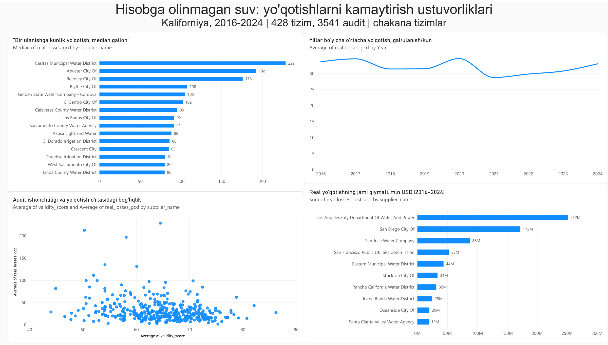

Kaliforniya · 2016–2024 · ochiq davlat ma'lumoti
Suv korxonalari yo'qotishni foizda o'lchaydi va mablag'ni shu ro'yxat bo'yicha taqsimlaydi. 3541 ta rasmiy hisobot shu usul noto'g'ri shaharlarni ko'rsatishini isbotladi.
Har bir shaharda suv quvurlardan oqib ketadi — sizib chiqadi, hisoblanmaydi yoki ruxsatsiz olinadi. Buni butunlay to'xtatib bo'lmaydi, pul esa cheklangan.
Hozir qaror bitta raqamga qarab qabul qilinadi: berilgan suvning necha foizi yo'qolgan. Muammo shundaki, bu raqam shahar qancha suv ishlatishiga bog'liq.
Oyiga 1 000 000 so'm ishlaydi, 200 000 so'mini yo'qotdi.
20%Foizga qarasak — yomonroq ko'rinadi.
Oyiga 20 000 000 so'm ishlaydi, 1 000 000 so'mini yo'qotdi.
5%Aslida besh barobar ko'p pul yo'qotdi.
Suvda ham xuddi shunday. Kam suv ishlatadigan kichik kurort shaharchada ozgina yo'qotish katta foiz bo'lib chiqadi. Ko'p suv ishlatadigan sanoat shahrida esa sezilarli yo'qotish kichik foiz bo'lib ko'rinadi.
Eng keng tarqalgan usul, lekin shahar kattaligiga bog'liq.
Turli kattalikdagi shaharlarni adolatli taqqoslaydi.
Quvur uzunligi va bosimni hisobga oladi.
Mablag' odatda «eng yomon 20 talik» ro'yxati bo'yicha taqsimlanadi. Har bir o'lchov bo'yicha o'z 20 taligi tuzildi va ular qanchalik ustma-ust tushishi sanaldi.
Ikkita professional o'lchov bir-biriga mos keladi. Foiz esa ikkalasidan ham chetda qoladi. Agar u shunchaki «boshqacha, lekin bir xil darajada to'g'ri» o'lchov bo'lganida, ikkalasidan bir xil masofada turardi.
Big Bear foiz bo'yicha 51-o'rinda — eng yomonlar qatorida. Uy boshiga hisoblaganda esa 368-o'rinda, ya'ni deyarli namunali. 428 shahar ichida.
428 shaharning har biri ikki o'lchov bo'yicha reytinglangan. 1-o'rin — eng ko'p yo'qotadigan.
| Shahar yoki tuman | Foiz bo'yicha | Uy boshiga | Siljish |
|---|
2016-yilda ham, 2024-yilda ham deyarli bir xil.
Shu to'qqiz yilda sezilarli yaxshilandi.
Tarozida tez-tez turish vaznni kamaytirmaydi. O'lchash zarur, lekin o'lchashning o'zi suvni tejamaydi — o'lchagandan keyin ta'mirlash kerak.
Yo'qotilgan suv to'g'ridan-to'g'ri o'lchanmaydi. U ayirma orqali topiladi: berilgan suvdan mijozlar ishlatgani ayriladi.
40 ta hisobotda yo'qotilgan suv manfiy chiqadi — jismonan mumkin emas. Har uchinchisida raqam texnik chegaradan past. Bunday shaharda birinchi qadam quvur ta'mirlash emas, hisoblagichlarni tekshirish.
Shaharlarni bitta qatorga tizish o'rniga, holatiga qarab uch guruhga ajratish kerak.
Yo'qotish katta va raqamga ishonish mumkin. Muammo haqiqiy, ishni boshlash mumkin.
Yo'qotish katta ko'rinadi, lekin raqam ishonchsiz. Avval hisoblagichlar tekshiriladi.
Holat o'rtacha, lekin shahar katta. Kichik yaxshilanish ham ko'p pul tejaydi.
Va bitta qoida: ichki qaror faqat foizga tayanmasligi kerak. Foizni hisobotdan chiqarish shart emas — u qonun talabi. Lekin mablag' taqsimlashda u yetarli emas.
Ma'lumotni yuklash, tozalash, ko'rsatkichlarni hisoblash va tahlil. 3541 ta hisobotni qo'lda hisoblab bo'lmaydi; kod bir marta yoziladi va istalgan vaqtda qayta ishga tushiriladi.
Mustaqil tekshiruv. Asosiy raqamlar AVERAGEIFS, COUNTIFS, RANK formulalari va pivot jadvallar bilan noldan qayta hisoblanib, Python natijasi bilan solishtirildi.
Yakuniy panel: shaharlar reytingi, yillar bo'yicha o'zgarish, hisobot sifati va yo'qotish bog'liqligi, pul qiymati.
Tahlil davomida manba ma'lumotida xato topildi: bitta ustun hujjatda «foiz» deb ta'riflangan, aslida yuz barobar kichik saqlangan. Tekshirilmaganda butun natija xato chiqar edi.
